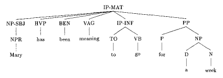
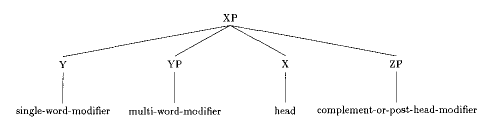
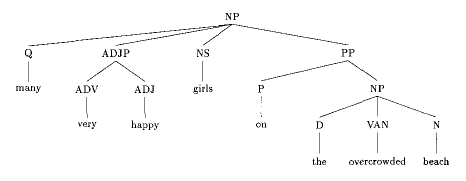
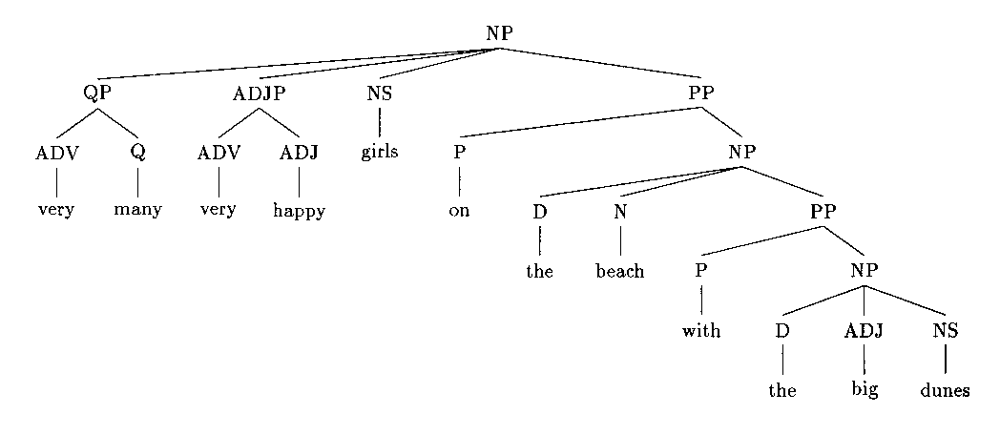

Note that:
(IP-MAT (NP-SBJ (NPR Mary))
(HVP has)
(BEN been)
(VAG meaning)
(IP-INF (TO to)
(VB go))
(PP (P for)
(NP (D a) (N week))))
(IP-MAT (CONJ And) <--- sentential conjunction
(NP-SBJ (NPR Mary))
(VBD looked)
(RP up) <--- particle
(NP-OB1 (NP-POS (NPR Jane) ($ 's))
(N number)))
(IP-MAT-SPE (INTJ Alas) <--- single-word interjection
(IP-MAT-PRN (VBD cried)
(NP-SBJ (NPR Mary)))
(NP-SBJ (PRO I))
(HVP have)
(VBD lost)
(NP-OB1 (PRO$ my) (NS glasses)))
(NP (D the ) (N girl))
(PP (P in)
(NP (D the) (N spring)))
(ADJP (ADV very) (ADJ big))
(NP (D a) (ADJ big) (N cat))
(NP (D a)
(ADJP (ADV very) (ADJ big))
(N cat))
(IP-MAT (PP (P From)
(ADVP (ADV above)))
(MD shall)
(VB come)
(NP-SBJ (D +te) (N judge)
(ADJP (ADJ fierce) (CONJ and) (ADJ angry)))
(. ;))
(IP-MAT (NP-SBJ (PRO He))
(ADVP-TMP (ADV never))
(VBD found)
(NP-OB1 (D a) (N woman)
(ADJP (ADJ good))))
(IP-MAT (NP-SBJ (D The) (N king))
(VBD gave)
(NP-OB2 (PRO him))
(NP-OB1 (D an) (N island)
(RRC (VAN forsaken)))) <--- RRC = reduced relative clause
(IP-MAT (NP-SBJ (PRO$ Our) (N life)
(ADVP-LOC (ADV here)))
(BEP is)
(ADJP (ADV very) (ADJ comfortable)))
(IP-MAT (NP-SBJ (PRO She))
(VBD came)
(NP-TMP (D the) (ADJ fifth) (N day)
(ADVP-TMP (ADV+WARD afterward))))
(IP-MAT (NP-TMP (N Yesterday))
(NP-SBJ (NPR Mary))
(VBD told)
(NP-OB2 (NPR Jane))
(CP-THT (C that)
(IP-SUB (NP-SBJ (PRO she))
(VBD studied)
(NP-MSR (QP (ADVR too) (Q much)))
(PP (P during)
(NP (D the) (N+N weekend))))))
(IP-MAT (NP-SBJ (NPR Mary))
(VBD put)
(NP-OB1 (D the) (N book))
(PP (P on)
(NP (D the) (N table)))
(PP (P on)
(NP (NPR Saturday))))
(IP-MAT (NP-SBJ (NPR Mary))
(ADVP (ADV happily))
(VBD put)
(NP-OB1 (D the) (N book))
(ADVP-LOC (ADV there))
(ADVP-TMP (ADV+WARD afterward)))
(IP-MAT (NP-SBJ (NPR Mary))
(VBD forgot)
(IP-INF (TO to)
(VB tell)
(NP-OB2 (NPR Jane))
(CP-THT (C that)
(IP-SUB (NP-SBJ (PRO she))
(MD should)
(VB buy)
(NP-OB1 (N milk))))))
(IP-MAT (NP-SBJ (NPR Mary))
(VBD saw)
(NP-OB1 (D the) (N man))
(PP (P with)
(NP (D the) (N telescope))))

(XP (Y single_word_modifier) (X head)
(ZP complement_or_post_head_modifier))
(XP (W single_word_modifier) (Y single_word_modifier) (X head)
(ZP complement_or_post_head_modifier))
(XP (YP multi_word_modifier)
(X head)
(ZP complement_or_post_head_modifier))
(NP (D the) (NS girls)
(PP (P on)
(NP (D the) (N beach))))
(NP (Q many) (ADJ happy) (NS girls)
(PP (P on)
(NP (D the) (VAN overcrowded) (N beach))))
(NP (ADJP (ADJ happy) (CONJ and) (VAN excited))
(NS girls))
(NP (Q many)
(ADJP (ADV very) (ADJ happy))
(NS girls)
(PP (P on)
(NP (D the) (VAN overcrowded) (N beach))))
(NP (QP (ADV very) (Q many))
(ADJP (ADV very) (ADJ happy))
(NS girls)
(PP (P on)
(NP (D the) (N beach)
(PP (P with)
(NP (D the) (ADJ big) (NS dunes))))))


Other phrases have the same structure as NPs.
(ADJP (ADV very) (ADJ happy))
(ADJP (ADJ full)
(PP (P of)
(NP (N water))))
(PP (ADV especially)
(P on)
(NP (NPRS Saturdays)))
(PP (ADV right)
(P up)
(NP (D the) (N street)))
(ADVP (ADV very) (ADV slowly))
PRO, EX, MAN, OTHERS, ?PRO$, ?ONE, ?OTHER, ?D, ?Q (QR, etc.)
VAN, VAG, (HAN, HAG, etc.), SUCH, QR, ?ONE, ?OTHER
(IP-MAT (IP-MAT-1 (NP-SBJ (NPR Mary))
(VBD gave)
(NP-OB2 (NPR Jane))
(NP-OB1 (D a) (ADJ red) (N ribbon)))
(CONJP (CONJ and)
(IP-MAT=1 (NP-OB2 (NPR Lucy))
(NP-OB1 (D a) (ADJ blue))))) <--- elided head noun
(IP-MAT (NP-SBJ (NPR Mary))
(MD will)
(VB want)
(IP-INF (TO to)
(VB see)
(NP-OB1 (D that) (N movie))
(ADVP (ADV too))))
(IP-MAT (NP-SBJ (NPR Mary))
(HVP has)
(BEN been)
(VAG buying)
(NP-OB1 (NS groceries))
(ADVP-LOC (ADV there))
(PP (P for)
(NP (NS years))))
(IP-MAT (NP-SBJ (NPR Mary))
(VBD woke)
(RP up)
(ADVP-TMP (ADV late))
(NP-TMP (D this) (N morning)))
(IP-MAT (NP-SBJ (NPR Mary))
(VBD walked)
(PP (RP up) (P to)
(NP (D the) (N beach))))
(IP-MAT (NP-SBJ (D The) (N raising) (RP up)
(PP (P of)
(NP (D the) (NS walls))))
(VBD took)
(NP-MSR (NUM three) (NS days)))
(IP-MAT (NP-SBJ (NPR Mary))
(FP even)
(VBP likes)
(NP-OB1 (ADJ green) (N jelly) (NS beans)))
(IP-MAT (CONJ And)
(NP-SBJ (NPR Mary))
(VBD wanted)
(NP-ACC (QR more)))
(IP-MAT (CONJ But)
(NP-SBJ (NPR Mary))
(VBD left)
(ADVP-TMP (ADV early)))
(IP-MAT-SPE (INTJ Damn)
(NP-SBJ (D this))
(BEP is)
(ADJP (ADVR too) (ADJ small))
(IP-MAT-PRN (VBD said)
(NP-SBJ (NPR Mary))))
(IP-MAT (NP-SBJ (NPR Mary))
(VBD bought)
(NP-OB1 (D a) (N cat)))
(IP-MAT (CONJ and)
(NP-SBJ *con*) <--- subject elided under conjunction
(VBD took)
(NP-OB1 (PRO it))
(NP-DIR (N home)))
(IP-MAT (NP-SBJ (NPR Mary))
(VBD helped)
(IP-INF (NP-SBJ *arb*) <--- an "arbitrary pro" subject is added in
(VB buy) ECM cases without a specified subject
(NP-OB1 (D the) (N car))))
(IP-MAT (PP (P On)
(NP (D the) (N corner)))
(NP-SBJ-1 *exp*) <--- empty expletive in locative context
(BEP is)
(NP-1 (D a) (N bank)))
(IP-MAT (NP-OB2 (PRO me))
(NP-SBJ-1 *exp*) <--- empty expletive in impersonal context
(VBP thinketh)
(CP-THT-1 (C that)
(IP-SUB (NP-SBJ (NPR Mary))
(BEP is)
(ADJP (ADJ late)))))
(IP-MAT (NP-SBJ (NPR Mary))
(VBD gave)
(NP-OB2 (NPR Jane))
(NP-OB1 (D a) (N present)))
(IP-MAT (NP-SBJ (NPR Mary))
(VBD bought)
(NP-OB2 (NPR Jane)) <--- benefactives are labelled NP-OB2
(NP-OB1 (D a) (N present)))
(IP-MAT (NP-SBJ (NPR Mary))
(VBD told)
(NP-OB2 (NPR Jane))
(IP-INF (TO to)
(VB buy)
(NP-OB1 (NS vegetables))))
(IP-MAT (NP-SBJ (NPR Mary))
(VBD encouraged)
(NP-OB1 (NPR Jane))
(IP-INF (TO to)
(VB buy)
(NP-OB1 (NS vegetables))))
(IP-MAT (NP-SBJ-1 (PRO It))
(VBP behooves)
(NP-OB2 (NPR Mary)) <--- objects of impersonal verbs are NP-OB2
(IP-INF-1 (TO to)
(BE be)
(ADJP (QR more) (ADJ careful))))
(IP-MAT (NP-SBJ (NPR$ Marys) (N cat))
(VBD ran)
(ADVP-DIR (ADV away)))
(IP-MAT (NP-SBJ (NP-POS (NPR Mary) ($ 's))
(N cat))
(VBD ran)
(ADVP-DIR (ADV away)))
(IP-MAT (NP-SBJ (NP-POS (NPR Mary) ($ his))
(N cat))
(VBD ran)
(ADVP-DIR (ADV away)))
(IP-MAT (NP-SBJ (NP-POS (D the) (ADJ tall) (N$ girls))
(N mother))
(BEP is)
(ADJP (ADV very) (ADJ smart)))
Most non-possessive uses of NP-COM are not possible in Modern
English. The most common one is bare NP complements of HALF, MANNER, and
SIDE.
(IP-MAT (NP-SBJ (NPR Arthur))
(VBD ruled)
(PP (P on)
(NP (D this) (N half)
(NP-COM (NPR Humber)))))
(IP-MAT (NP-SBJ (NUM Two) (N manner)
(NP-COM (NS men)))
(BEP are)
(PP (P in)
(NP (ADJ holy) (NPR Church))))
(IP-MAT (NP-SBJ (NPR Mary))
(VBD went)
(NP-RFL (PRO her))
(PP (P to)
(NP (N church))))
(IP-MAT (NP-SBJ (NPR Mary))
(VBD prayed)
(NP-RFL (PRO her))
(PP (P to)
(NP (NPR God))))
(IP-MAT (NP-SBJ (NPR Mary))
(VBD washed)
(NP-OB1 (PRO+N herself))) <--- reflexive object of transitive verb
(IP-MAT (NP-SBJ (NPR Mary)
(NP-PRN (PRO+N herself))) <--- emphatic reflexive
(VBD wrote)
(NP-OB1 (D the) (N book)))
(IP-MAT (NP-SBJ (NPR Mary)
(NP-PRN *ICH*-1))
(VBD wrote)
(NP-OB1 (D the) (N book))
(NP-PRN-1 (PRO+N herself))) <--- emphatic reflexive
(IP-IMP-SPE (VBI Come)
(RP on)
(NP-VOC (NPR Mary))
(IP-MAT-PRN (VBD shouted)
(NP-SBJ (NPR Jane))))
(IP-MAT (NP-LFD (NPR Mary))
(NP-SBJ-RSP (PRO she))
(ADVP-TMP (ADV always))
(VBP wins))
(IP-IMP (NP-LFD (PRO he)
(CP-REL (WNP-1 (WPRO who))
(C 0)
(IP-SUB (NP-SBJ *T*-1)
(HVP has)
(NP-OB1 (NS ears)))))
(VBI let)
(IP-INF (NP-SBJ-RSP (PRO him))
(VB hear)))
(IP-MAT (NP-SBJ (NPR Mary))
(VBP loves)
(NP-OB1 (PRO$ her) (NS cats))
(NP-MSR (QP (ADV very) (Q much))))
(IP-MAT (NP-SBJ (NPR Mary))
(VBD worked)
(NP-MSR (Q all) (N night)))
(IP-MAT (NP-SBJ (NPR Mary))
(VBD walked)
(NP-MSR (NUM ten) (NS miles))
(PP (P during)
(NP (D the) (N night))))
(IP-MAT (NP-SBJ (NPR Mary))
(VBD went)
(NP-DIR (N home))
(PP (P at)
(NP (N noon))))
(IP-MAT (NP-SBJ (NPR Mary))
(VBD went)
(NP-DIR (D that) (N way))
(IP-INF-PRP (TO to)
(VB avoid)
(NP-OB1 (D the) (N traffic))))
(IP-MAT (NP-SBJ (NPR Mary))
(VBD went)
(NP-DIR (N south))
(IP-INF-PRP (TO to)
(VB enjoy)
(NP-OB1 (D the) (N sun))))
(IP-MAT (NP-SBJ (PRO They))
(VBD bound)
(NP-OB1 (PRO her))
(NP-ADV (N hand) (CONJ and) (N foot)))
(IP-MAT (NP-SBJ (NPR Mary))
(DOD did)
(NP-OB1 (PRO it))
(NP-ADV (PRO$ her) (N way)))
(IP-MAT (NP-SBJ (PRO They) (Q all))
(VBD came)
(RP in)
(NP-ADV (NP (ONE one))
(PP (P at)
(NP (D a) (N time)))))
(IP-MAT (NP-ADV (CP-FRL (WNP-1 (WPRO+ADV Whatever))
(C 0)
(IP-SUB (NP-SBJ *T*-1)
(VBP happens))))
(NP-SBJ (NPR Mary))
(MD will)
(NEG not)
(VB give)
(RP up))
(IP-MAT (NP-SBJ (NPR Mary))
(VBD died)
(NP-SPR (D a) (N martyr)))
(IP-MAT (NP-SBJ (PRO He))
(VBP falls)
(PP (NP-DOP (D the) (NPR devil)) <--- ``he falls into the devil's hand''
(P into)
(NP (N hand))))
(IP-MAT (NP-SBJ (NPR Mary))
(BEP is)
(ADJP (ADV very) (ADJ intelligent)))
(IP-MAT (NP-SBJ (NPR Mary))
(VBD arrived)
(ADJP-SPR (ADJ alone)))
(IP-MAT (NP-SBJ (NPR Mary))
(VBD sat)
(ADJP-LOC (ADJ near)
(NP (NPR Jane))
(PP (P at)
(NP (N lunch)))))
(IP-MAT (NP-SBJ (NPR Washington))
(BEP is)
(ADJP-LOC (ADJ far)
(PP (P from)
(NP (NPR Houston)))))
(IP-MAT (CONJ And)
(ADVP (ADV so))
(ADVP-TMP (ADV+WARD afterwards))
(NP-SBJ (NPR Mary))
(BED was)
(ADJP (ADJ sorry)
(PP (P for)
(NP (PRO$ her) (NS actions)))))
(IP-MAT (NP-SBJ (NPR Mary))
(VBD lived)
(ADVP-LOC (ADV there))
(ADVP (ADV happily))
(PP (P for)
(NP (NUM ten) (NS years))))
(IP-MAT (ADVP (ADV again))
(NP-SBJ (NPR Mary))
(VBD went)
(ADVP-DIR (ADV thither)))
(IP-MAT (NP-SBJ (NPR Mary))
(VBD went)
(PP (P to) <--- argument PP
(NP (NPR London)))
(PP (P on) <--- adjunct PP
(NP (NPR Saturday))))
(IP-MAT (NP-SBJ (NPR Mary))
(VBD put)
(NP-OB1 (D the) (N book))
(PP (P on)) <--- argument PP
(NP (D the) (N table))
(PP (P for) <--- adjunct PP
(NP (NPR Jane))))
(IP-MAT (INTJP (NPR God))
(NP-SBJ (D that))
(BED was)
(NP-OB1 (D a) (ADJ long) (N lecture)))
(INTJP (INTJ Lo)
(CP-QUE (WADVP-1 (WADV how))
(C 0)
(IP-SUB (NP-SBJ (D the) (ADJ mighty))
(HVP have)
(VBN fallen))))
(IP-MAT (INTJP (INTJ Alas) (CONJ and) (INTJ welladay))
(NP-SBJ (PRO$ my) (N cat))
(HVP has)
(VBN run)
(ADVP-DIR (ADV away)))
quotation phrase QTP Latin sequences LATIN (or other language FRENCH, HEBREW, etc.) references REF meta-text material CODE
(CP-QUE-SPE (IP-SUB-SPE (MD Shall)
(NP-SBJ (PRO we))
(VB go)
(PP (P to)
(NP (D the) (N park))))
(, ?)
(IP-MAT-PRN (VBD asked)
(NP-SBJ (NPR Mary))))
(QTP (INTJ No)
(IP-MAT-PRN (VBD answered)
(NP-SBJ (NPR Jane)))
(PP (P to)
(NP (D the) (N beach))))
(CP-QUE-SPE (WADVP-1 (WADV Why))
(IP-SUB-SPE (ADVP *T*-1)
(DOD did)
(NP-SBJ (PRO you))
(DO do)
(NP-OB1 (PRO it))
(, ?)
(IP-MAT-PRN (VBD asked)
(NP-SBJ (NPR (Mary))))))
(IP-MAT (NP-SBJ (NPR Jane))
(VBD answered)
(ADVP (ADV shortly))
(QTP (NP (Q no) (N reason))))
(IP-MAT (NP-SBJ (NPR Esther))
(VBP means)
(" ")
(QTP (VAN hidden))
(" ")
(PP (P in)
(NP (NPR English))))
(IP-MAT (NP-SBJ (NPR Saint) (NPR Augustine))
(VBD said)
(QTP (LATIN (FW Caveat) (FW emptor))))
(IP-MAT (NP-SBJ (D The) (ADJ third))
(BEP is)
(NP-OB1 (LATIN (FW cordis) (FW grauitas)))
(. .))
(IP-MAT (CONJ but)
(PP (P in)
(NP (NPR Latin)))
(NP-SBJ (PRO it))
(VBP highte)
(NP-OB1 (LATIN (FW Centesimus) (FW fructus)))
(. .))
(REF (LATIN (FW Augustinus)
(, ,)
(FW De) (FW Civitate) (FW libro) (FW nono))
(. .))
(IP-MAT (CONJ and)
(PP (ADV+P therfore))
(VBP seith)
(NP-SBJ (NPR Seint) (NPR Paul))
(REF (LATIN (FW Ad) (FW Ephesios) (FW quinto))) <--- ``in Ephesians 5''
(, ,)
(CP-THT (C that)
(IP-SUB (NP-SBJ (D an) (ADJ avaricious) (N man))
(BEP is)
(PP (P in)
(NP (D the) (N thraldom)
(PP (P of)
(NP (N ydolatrie)))))))
(. .))
(XP (XP first_conjunct)
(CONJP (CONJ conjunction)
(YP second_conjunct)))
The conjunction phrase (CONJP) is sister to the first conjunct, while
the head of the CONJP (the conjunction) takes the second conjunct as a
complement. This applies to the conjunction of all phrasal categories
except IP, which is a special case (see Section IP CONJUNCTION). Conjunction of word-level
categories (e.g., verbs) and cases with potential shared modifiers are
also treated slightly differently. See further below.
(NP (NP (D the) (N cat))
(CONJP (CONJ and)
(NP (D the) (N dog))))
(ADJP (ADJP (ADV very) (ADJ happy))
(CONJP (CONJ or)
(ADJP (ADV very) (ADJ sad)))))
(PP (PP (P on)
(NP (N land)))
(CONJP (CONJ or)
(PP (P on)
(NP (N sea)))))
(IP-MAT (NP-SBJ (NPR Mary))
(VBD said)
(CP-THT (CP-THT (C that)
(IP-SUB-(NP-SBJ (NPR Jane))
(MD should)
(VB go)
(PP (P to)
(NP (D the) (N store)))))
(CONJP (CONJ and)
(CP-THT (C that)
(IP-SUB (NP-SBJ (PRO she))
(MD should)
(VB demand)
(NP-OB1 (PRO$ her) (N money))
(ADVP (ADV back)))))))
(NP (NS cats) (CONJ and) (NS dogs)) (ADJP (ADJ happy) (CONJ and) (ADJ sad)) (ADVP (ADV quickly) (CONJ or) (ADV slowly)) (VBP (VBP sings) (CONJ and) (VBP dances)) (MD (MD could) (CONJ or) (MD would)) (RP (RP up) (CONJ and) (RP down))
(XP (X first_conjunct)
(CONJP (CONJ conjunction)
(YX second_conjunct)))
(NP (ADJ old) (NS women)
(CONJP (CONJ and)
(NX (NS men))))
(ADJP (ADV very) (ADJ gloomy)
(CONJP (CONJ and)
(ADJX (ADJ sad))))
(ADVP (ADV very) (ADV slowly)
(CONJP (CONJ and)
(ADVX (ADV carefully))))
(IP-MAT (NP-SBJ (NPR Mary))
(VBD came)
(NP-DIR (N home)))
(IP-MAT (CONJ and)
(NP-SBJ *con*)
(VBD put)
(NP-OB1 (PRO$ her) (NS feet))
(RP up))
IPs are conjoined like other phrases
(IP-MAT (IP-MAT-1 (NP-SBJ (NPR Mary))
(BED was)
(VAG eating)
(NP-OB1 (N dinner)))
(CONJP (CONJ and)
(IP-MAT=1 (VAG reading)
(NP-OB1 (D a) (N book)))))
(IP-MAT (IP-MAT-1 (NP-SBJ (NPR Mary))
(MD will)
(VB buy)
(NP-OB1 (NS groceries)))
(CONJP (CONJ and)
(IP-MAT=1 (VB cook) <--- note that no empty categories are
(NP-OB1 (N dinner)) added in clauses with an equal-sign
(PP (P after) index
(NP (N work))))))
(IP-MAT (NP-SBJ (NPR Mary))
(VBD said)
(CP-THT (C that)
(IP-SUB (IP-SUB (NP-SBJ (NPR Jane))
(VBD bought)
(NP-OB1 (NS groceries)))
(CONJP (CONJ and)
(IP-SUB (NP-SBJ *con*) <--- when only the subject is elided
(VBD cooked) under conjunction, an empty
(NP-OB1 (N dinner))))))) subject is added
(IP-MAT (NP-SBJ (NPR Mary))
(VBD said)
(CP-THT (C that)
(IP-SUB (IP-1 (NP-SBJ (NPR Jane))
(MD will)
(VB buy)
(NP-OB1 (NS groceries)))
(CONJP (CONJ and)
(IP=1 (VB cook)
(NP-OB1 (N dinner)))))))
(NP-SBJ *con*) subject elided under conjunction
(NP-SBJ *exp*) empty expletive subject
(NP-SBJ *pro*) "small pro" subject
(NP-SBJ *arb*) arbitrary PRO subject in ECM infinitives
(XP *T*) wh- trace (XP = NP, ADJP, or ADVP)
(XP *ICH*) non-wh trace (XP = any phrase)
(XP *) - without an index indicates elided or understood constituent
- with an index indicates coreference of empty position with
a constituent in another clause
(IP-MAT (ADJP (ADVR So) (ADJ happy) <--- topicalization not indicated
(CP-DEG *ICH*-1)) <--- extraposition of degree clause
(BED was) indicated
(NP-SBJ (NPR Mary))
(CP-DEG-1 (C that)
(IP-SUB (NP-SBJ (PRO she))
(VBD danced)
(NP-OB1 (D a) (N jig)))))
A-bar movement is also only indicated in cases in which the moved element
has been extracted from another constituent. Thus passivization is
indicated if the passivized NP is extracted from an infinitive, small
clause or PP, but not if it is simply passivized from object position.
(IP-MAT (NP-SBJ-1 (PRO She))
(BED was)
(VAN called)
(IP-SMC (NP-SBJ *-1)
(NP-OB1 (NPR Mary)))
(PP (P after)
(NP (PRO$ her) (N grandmother))))
For more details, see TRACES in the full
documentation.
(IP-MAT (NP-SBJ (NPR Mary))
(VBP likes)
(NP-OB1 (NS cats)))
(IP-MAT (NP-SBJ (NPR Mary))
(BEP is)
(VAG buying)
(NP-OB1 (D a) (N cat)))
(IP-MAT (NP-SBJ (NPR Mary))
(VBD bought)
(NP-OB1 (D a) (N cat))
(PP (P on)
(NP (NPR Tuesday))))
(IP-MAT (NP-SBJ (NPR Mary))
(MD might)
(HV have)
(VBN bought)
(NP-OB1 (D a) (N cat))
(PP (P on)
(NP (NPR Tuesday))))
Cases of (potential) VP conjunction ( Mary bought a cat and took it
home) are treated as two separate IPs with an elided subject, represented
by (NP-SBJ *con*) in the second IP.
(IP-MAT (NP-SBJ (NPR Mary))
(VBD bought)
(NP-OB1 (D a) (N cat)))
(IP-MAT (CONJ and)
(NP-SBJ *con*)
(VBD took)
(NP-OB1 (PRO it))
(NP-DIR (N home)))
Conjoined intransitive verbs ( Mary sang and danced at the party) or
conjoined transitive verbs which share a single object ( Mary wrote and
directed the film) are conjoined at the word level and included in the
same IP rather than being separated.
(IP-MAT (NP-SBJ (NPR Mary))
(VBD (VBD sang) (CONJ and) (VBD danced))
(PP (P at)
(NP (D the) (N party))))
(IP-MAT (NP-SBJ (NPR Mary))
(VBD (VBD wrote) (CONJ and) (VBD directed))
(NP-OB1 (D the) (N film)))
(IP-IMP (VBI hurry)
(RP up))
(IP-IMP (VBI gather)
(NP-SBJ (PRO ye))
(NP-OB1 (N+NS rosebuds))
(PP (P while)
(CP-ADV (C 0)
(IP-SUB (NP-SBJ (PRO ye))
(MD may)
(VB *)))))
(IP-MAT (NP-SBJ (NPR Mary))
(VBD said)
(IP-MAT-SPE (NP-SBJ (PRO I))
(VBP want)
(NP-OB1 (N cake))))
(IP-MAT (NP-SBJ (NPR Mary))
(VBD said)
(CP-QUE-SPE (WNP-1 (WPRO what))
(IP-SUB-SPE (NP-OB1 *T*-1)
(BEP is)
(NP-SBJ (D the) (N matter))
(NP-VOC (NPR Jane))))
(. ?))
(IP-MAT (NP-SBJ (NPR Mary)
(NP-PRN (NPR$ Janes) (N sister)))
(VBD bought)
(NP-OB1 (D a) (N car)))
(NP (D this) (N virtue)
(, ,)
(IP-MAT-PRN (NP-SBJ (D that))
(BEP is)
(IP-INF (TO to)
(VB say)
(NP-OB1 (N maidenhood) (CONJ or) (N chastity)))))
(IP-IMP-SPE (VBI Come)
(RP on)
(IP-MAT-PRN (VBD cried)
(NP-SBJ (NPR Mary))))
complement infinitive IP-INF purpose infinitive IP-INF-PRP adjunct infinitive IP-INF-ADT small clause IP-SMC participial clause IP-PPL absolute IP-ABS
(IP-SUB (NP-SBJ (NPR Mary))
(VBD wanted)
(IP-INF (TO to)
(VB go)
(PP (P to)
(NP (NPR Paris)))))
(IP-MAT (NP-SBJ (NPR Mary))
(VBD bought)
(NP-OB1 (D the) (N car))
(IP-INF-PRP (TO to)
(VB commute)
(PP (P to)
(NP (N work)))))
(IP-MAT (NP-SBJ (NPR Mary))
(VBD helped) <--- ECM verb
(IP-INF (NP-SBJ (NPR Jane))
(VB buy)
(NP-OB1 (D a) (N car))))
(IP-MAT (NP-SBJ (NPR Mary))
(VBD helped)
(IP-INF (NP-SBJ *arb*) <--- an "arbitrary pro" subject is added in
(VB buy) ECM cases without a specified subject
(NP-OB1 (D the) (N car))))
(IP-MAT (NP-SBJ (NPR Mary))
(DOD did)
(NP-OB1 (N wrong))
(IP-INF-ADT (TO to)
(VB steal)
(NP-OB1 (D the) (N car))))
(IP-MAT (NP-SBJ (NPR Mary))
(VBP considers)
(IP-SMC (NP-SBJ (NPR Jane))
(NP-OB1 (D a) (N friend)))) <--- nominal predicate
(IP-MAT (NP-SBJ (NPR Mary))
(VBP considers)
(IP-SMC (NP-SBJ (NPR Jane))
(ADJP (ADJ friendly)))) <--- adjectival predicate
(IP-MAT (NP-SBJ (NPR Mary))
(VBP considers)
(IP-SMC (NP-SBJ (D the) (N battle))
(VAN lost))) <--- adjectival participle predicate
(IP-MAT (NP-SBJ (N People))
(VBP call)
(IP-SMC (NP-SBJ (PRO her))
(NP-OB1 (NPR Mary))))
(IP-SUB (NP-SBJ (PRO She))
(BEP is)
(VAN called)
(IP-SMC (NP-SBJ *-1) <--- passivization of subject of small clause
(NP-OB1 (NPR Mary))))
(IP-MAT (NP-SBJ (NPR Mary))
(VBD ran)
(PP (P down)
(NP (D the) (N street)))
(IP-PPL (VAG shouting)
(IP-IMP-SPE (VBI Charge)))
(. !))
(IP-MAT (NP-SBJ (NPR Mary))
(VBD saw)
(NP-OB1 (NPR Jane))
(IP-PPL (VAG sitting)
(PP (P under)
(NP (D a) (N tree)))))
(IP-MAT (PP (P On)
(IP-PPL (VAG looking)
(PP (RP up) (P from)
(NP (PRO$ her) (N work)))))
(NP-SBJ (NPR Mary))
(VBD saw)
(NP-OB1 (NPR Jane)))
(IP-MAT (IP-PPL (VAN lost)
(PP (P in)
(NP (N thought))))
(NP-SBJ (NPR Mary))
(VBD missed)
(NP-OB1 (PRO$ her) (N bus) (N stop)))
(IP-MAT (IP-ABS (NP-SBJ (NPR Jane))
(VAG having)
(VBN fallen)
(PP (P in)
(NP (D the) (ADJ third) (N lap))))
(NP-SBJ (NPR Mary))
(ADVP (ADV easily))
(VBD won)
(NP-OB1 (D the) (N race)))
(IP-MAT (PP (P With)
(IP-ABS (NP-SBJ (NPR Jane))
(BAG being)
(VAN disqualified)))
(NP-SBJ (NPR Mary))
(ADVP (ADV easily))
(VBD won)
(NP-OB1 (D the) (N race)))
(FRAG (ADVP-TMP (ADV Never))
(PP (P on)
(NP (D a) (NPR Sunday))))
wh-questions CP-QUE relative clauses CP-REL free relative clauses CP-FRL clause-adjoined relative CP-CAR comparative clauses CP-CMP some adverbial clauses CP-ADV tough-movement complements CP-TMC it-cleft CP-CLF
(CP-QUE (WNP-1 (WPRO What))
(IP-SUB (NP-OB1 *T*-1)
(DOP does)
(NP-SBJ (NPR Mary))
(VB want))
(. ?))
(CP-QUE (WADVP-1 (WADV Where))
(IP-SUB (ADVP-LOC *T*-1)
(DOD did)
(NP-SBJ (NPR Jane))
(VB go)
(. ?)))
(IP-MAT (NP-SBJ (NPR Mary))
(VBP knows)
(CP-QUE (WADVP-1 (WADV why))
(C 0)
(IP-SUB (ADVP *T*-1)
(NP-SBJ (NPR Jane))
(VBD bought)
(NP-OB1 (D the) (N car)))))
(IP-MAT (NP-SBJ (NPR Mary))
(VBD asked)
(CP-QUE (WNP-1 (WD what) (N time))
(C 0)
(IP-SUB (NP-TMP *T*-1)
(NP-SBJ (NPR Jane))
(BED was)
(VAG coming))))
While in Modern English the complementizer position in indirect questions
is always empty, in Middle English it could be filled ( Mary asked what
time that Jane was coming).
(NP (D the) (N cat)
(CP-REL (WNP-1 0)
(C that)
(IP-SUB (NP-OB1 *T*-1)
(NP-SBJ (NPR Mary))
(VBD saw))))
(NP (NPR Mary)
(CP-REL (WNP-1 (WPRO who)) <--- restrictive and non-restrictive
(C 0) relatives are not distinguished
(IP-SUB (NP-SBJ *T*-1)
(VBD saw)
(NP-OB1 (D the) (N cat)))))
When relative clauses are associated with conjoined NPs ( the cats and
the dogs which play in the park), the attachment level of the relative can
be difficult to distinguish. The general rule in these cases (lacking
contextual evidence to the contrary) is that the relative clause attaches
as high as possible; that is, it applies to the whole NP rather than any
internal part of it. This is shown by making the relative a sister to the
other constituents of the highest NP. (For the treatment of conjunction,
see Section CONJUNCTION).
(NP (NP (D the) (NS cats))
(CONJP (CONJ and)
(NP (D the) (NS dogs)))
(CP-REL (WNP-1 (WPRO which))
(C 0)
(IP-SUB (NP-SBJ *T*-1)
(VBP play)
(PP (P in)
(NP (D the) (N park))))))
(IP-MAT (NP-SBJ (NPR Mary))
(VBD bought)
(NP-OB1 (CP-FRL (WNP-1 (WPRO what))
(C 0)
(IP-SUB (NP-SBJ (PRO she))
(BED was)
(VAN told)
(IP-INF (NP-OB1 *T*-1)
(TO to)
(VB buy))))))
(IP-MAT (NP-SBJ (NPR Mary))
(ADVP-TMP (ADV always))
(VBP travels)
(ADVP-LOC (CP-FRL (WADVP-1 (WADV where) (ADV ever))
(C 0)
(IP-SUB (NP-SBJ (PRO she))
(VBP wants)
(IP-INF (ADVP-LOC *T*-1)
(TO)
(VB *))))))
Free relatives can sometimes be difficult to distinguish from indirect
questions. We distinguish them strictly as follows: If the verb can take an
indirect question (test with a why question), then the construction
is treated as a question; if not, it is treated as a free relative.
In Middle English, free relatives may be headed by THAT or THERE (or less
commonly in the early texts by other th-words). For details on how these
cases are treated, see NON-WH
FREE RELATIVES in the full documentation.
(IP-MAT (NP-SBJ (NPR Mary))
(VBD ate)
(NP-OB1 (Q all) (D the) (N cake))
(CP-CAR (WNP-1 (WPRO which))
(C 0)
(IP-SUB (NP-SBJ *T*-1)
(VBD made)
(IP-SMC (NP-SBJ (NPR Jane))
(ADJP (ADJ angry))))))
(IP-MAT (NP-SBJ (D The) (N captain))
(VBD sank)
(NP-OB1 (D the) (N ship))
(CP-CAR (WNP-1 (D the) (WD which) (N captain))
(C 0)
(IP-SUB (NP-SBJ *T*-1)
(BED was)
(VAN court-marshalled))))
(IP-MAT (NP-SBJ (D The) (N girl)
(RRC (VAG wearing)
(NP-OB1 (D the) (ADJ red) (N hat))))
(VBD won)
(NP-OB1 (D the) (N race)))
(IP-MAT (NP-SBJ (D The) (N candidate)
(RRC (VAN elected)
(PP (P by)
(N panel))))
(BED was)
(NP-OB1 (D a) (N crook)))
Reduced relatives can sometimes be difficult to distinguish from adjunct
participial clauses. See REDUCED
RELATIVES in the General Introduction
for details on how the two cases are distinguished.
(IP-MAT (NP-SBJ (NPR Mary))
(VBD bought)
(NP-OB1-1 (D a) (N wrench))
(CP-EOP (WNP-1 0)
(IP-INF (TO to)
(VB fix)
(NP-OB1 (D the) (N sink)
(PP (P with)
(NP *T*-1))))))
(IP-MAT (NP-SBJ (NPR Mary))
(HVP has)
(NP-OB1-1 (Q+N nothing))
(CP-EOP (WNP-1 0)
(IP-INF (NP-OB1 *T*-1)
(TO to)
(DO do))))
(IP-MAT (NP-SBJ (NPR Mary))
(VBD ate)
(NP-OB1 (QP (ADVR as) (Q much))
(N cake))
(PP (P as)
(CP-CMP (WNP-1 0)
(C 0)
(IP-SUB (NP-OB1 *T*-1)
(NP-SBJ (NPR Jane))
(DOD did)
(VB *))))))
(IP-MAT (NP-SBJ (PRO She))
(MD ought)
(ADVP (ADV rather)
(PP *ICH*-1))
(TO to)
(BE be)
(VAN praised)
(PP-1 (P than)
(CP-CMP (WADVP-2 0)
(C 0)
(IP-SUB (ADVP *T*-2)
(CODE {she_ought_to_be})
(VAN yblamed)))))
(IP-MAT (NP-SBJ (NPR Mary))
(VBP votes)
(PP (P in)
(NP (Q every) (N election)))
(PP (P as)
(CP-ADV (WADVP-1 0)
(C 0)
(IP-SUB (ADVP *T*-1)
(NP-SBJ (D a) (ADJ good) (N citizen))
(MD should)
(VB *)))))
(IP-MAT (PP-PRN (P As)
(CP-ADV (WNP-1 0)
(C 0)
(IP-SUB (NP-OB1 *T*-1)
(NP-SBJ (NPR Mary))
(ADVP-TMP (ADV always))
(VBP says))))
(NP-SBJ (N tomorrow))
(BEP is)
(NP-OB1 (D+OTHER another) (N day)))
(IP-MAT (NP-SBJ (NPR Mary))
(BEP is)
(ADJP (ADJ easy)
(CP-TMC (WNP-1 0)
(IP-INF (NP-OB1 *T*-1)
(TO to)
(VB please)))))
(IP-MAT (NP-SBJ (PRO It))
(BEP is)
(NP-OB1 (NPR Mary))
(CP-CLF (WNP-1 (WPRO who))
(C 0)
(IP-SUB (NP-SBJ *T*-1)
(VBP knows)
(NP-OB1 (D the) (N answer)))))
yes/no questions CP-QUE that complements CP-THT adverbial clauses CP-ADV degree clauses CP-DEG
(CP-QUE (IP-SUB (BEP Are)
(NP-SBJ (PRO you))
(VAG coming))
(. ?))
(CP-QUE (IP-SUB (DOD Did)
(NP-SBJ (PRO you))
(VB want)
(IP-INF (TO to)
(VB go)))
(. ?))
(IP-MAT (NP-SBJ (NPR Mary))
(VBD said)
(CP-THT (C that)
(IP-SUB (NP-SBJ (PRO she))
(VBD liked)
(NP-OB1 (NS cats)))))
(IP-MAT (NP-SBJ (NPR Mary))
(VBD said)
(CP-THT (C 0)
(IP-SUB (NP-SBJ (PRO she))
(VBD liked)
(NP-OB1 (NS cats)))))
(IP-MAT (NP-SBJ (D the) (N fact)
(CP-THT (C that)
(IP-SUB (NP-SBJ (D the) (N world))
(BEP is)
(ADJP (ADJ round)))))
(HVD had)
(NEG not)
(VBN escaped)
(NP-OB1 (NPR Mary)))
(IP-MAT (NP-SBJ (NPR Mary))
(BEP is)
(ADJP (ADJ happy)
(CP-THT (C that)
(IP-SUB (NP-SBJ (NPR Jane))
(VBD won)
(NP-OB1 (D the) (N prize))))))
(IP-IMP (PP (P If)
(CP-ADV (C 0)
(IP-SUB (NP-SBJ (PRO you))
(VBP want)
(NP-OB1 (D a) (N ride)))))
(VBI ask)
(NP-OB2 (NPR Mary)))
(IP-MAT (PP (P When)
(CP-ADV (C 0)
(IP-SUB (NP-SBJ (D the) (N party))
(BED was)
(RP over))))
(NP-SBJ (NPR Mary))
(VBD went)
(NP-DIR (N home)))
Bare adverbial clauses, i.e. headed by THAT, are common in Middle English
and generally indicate purpose or result.
(IP-MAT (NP-SBJ (NPR Mary))
(VBD invested)
(ADVP (ADV wisely))
(CP-ADV (C that) <--- i.e., "so that"
(IP-SUB (NP-SBJ (PRO she))
(MD might)
(VB retire)
(PP (P in)
(NP (N comfort)))
(NP-TMP (ONE one) (N day)))))
Verb-first conditionals are given the same structure as other
constructions in which the verb is in C (see Sections WH-QUESTIONS and YES/NO QUESTIONS); i.e., the
complementizer position is not represented and the verb is first in
IP.
(IP-MAT (CP-ADV (IP-SUB (HVD had)
(NP-SBJ (PRO she))
(FP but)
(VBN known)))
(NP-SBJ (NPR Mary))
(MD would)
(ADVP-TMP (ADV never))
(HVP have)
(VBN trusted)
(NP-OB1 (NPR Jane)))
(IP-MAT (NP-SBJ (NPR Mary))
(BEP is)
(ADJP (ADVR so) (ADJ friendly)
(CP-DEG (C that)
(IP-SUB (NP-SBJ (PRO she))
(ADVP-TMP (ADV always)
(VBP stops)
(IP-INF (TO to)
(VB chat)))))))
(IP-MAT (NP-SBJ (NPR Mary))
(BEP is)
(NP-OB1 (ADJP (SUCH such)
(CP-DEG *ICH*-1))
(D a) (ADJ good) (N player)
(CP-DEG-1 (C that)
(IP-SUB (NP-SBJ (PRO she))
(ADVP-TMP (ADV always))
(VBP wins)))))
(IP-MAT (NP-SBJ (NPR Mary))
(ADVP (ADVR so)
(CP-DEG *ICH*-1))
(VBD wanted)
(IP-INF (TO to)
(VB pass)
(NP-OB1 (D the) (N exam)))
(CP-DEG-1 (C that)
(IP-SUB (NP-SBJ (PRO she))
(VBD studied)
(NP-TMP (Q every) (N night)))))